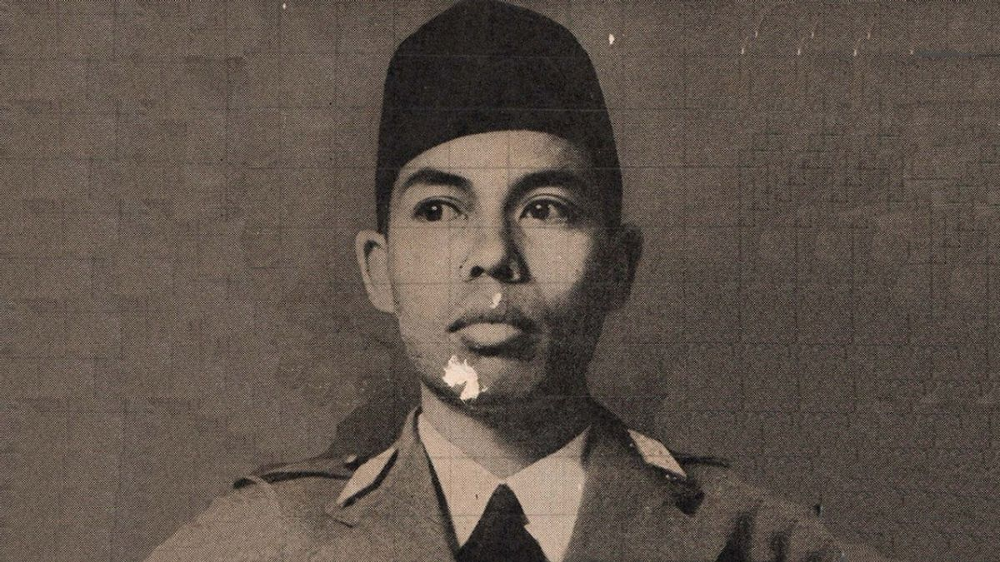
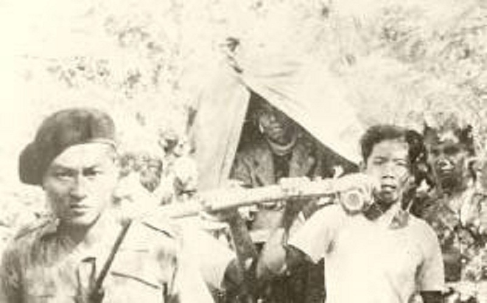

BAB V
Tokoh Nasional Indonesia
5. Panglima Besar Jenderal Soedirman (1916-1950)
|
Raden Soedirman lahir pada 24 Januari 1916 di Purbalingga, Jawa Tengah. Pendidikan yang ditempuh yaitu Hollandsch-Inlandsche School (HIS), kemudian Taman Dewasa Taman Siswa, dan Hollandsche Indische Kweekschool (HIK) tetapi tidak tamat. Kemudian, beliau mengajar sekolah dasar dan menjadi anggota organisasi Muhammadiyah. Ia juga bergabung dengan organisasi pramuka Hizbul Wathan dan terkenal dengan disiplinnya.
 Pada 5 Oktober 1945, Tentara Keamanan Rakyat (TKR) dibentuk dan pada 12 November, Sudirman diangkat sebagai panglima besar TKR dengan pangkat jenderal. Sejak itu, ia giat membina TKR hingga menjadi Tentara Nasional Indonesia (TNI). Pada 12 Desember 1945, Sudirman beserta anggota-anggota TKR berhasil menghalau pasukan Inggris dari Ambarawa setelah bertempur mati-matian selama tiga hari. Peristiwa ini semakin melembungkan nama Sudirman di Indonesia. Pada 19 Desember 1948, Belanda melancarkan agresi militer kedua. Sudirman melawannya dengan memimpin gerilya meskipun dalam keadaan sakit berat.  Ia kemudian pensiun dan pindah ke Magelang. Pada 29 Januari 1950, di kota tersebut, Panglima Besar Jenderal Sudirman meninggal dunia dan dimakamkan di Taman Makam Pahlawan Semaki, Yogyakarta. |